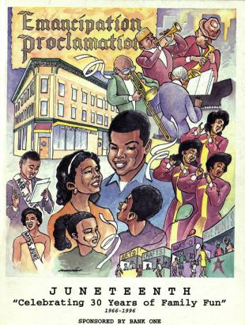

"It isn't where you came from; it's where you're going that counts."
- Ella Fitzgerald
Throughout Denver's history, Five Points and the Whittier neighborhood, located northeast of downtown, have been a sanctuary for the Black community. It was a bustling and well known community. At one point people would address letters to Five Points, Colorado like it was its own town.
Most Blacks in Denver worked as railroad porters, waiters, or domestic servants, but Five Points was also home to a growing number of Black professionals and office workers. Dr. Justina Ford, for decades the city’s only Black woman physician, worked from 1902 to 1952 out of her home and office at 2335 Arapahoe Street. In 1919 Samuel Cary became the state’s first licensed Black attorney and established his office in Five Points. The American Woodmen Insurance Company employed more Black office workers than any other business in Denver.
"I merely took the energy it takes to pout and wrote some blues."
-Duke Ellington
The Glenarm branch of the YMCA was built in 1924 and acted as the unofficial Town Hall of Five Points. Denver’s branch of the NAACP was established and hosted its first national meeting in 1925 to address the racial hostility and inequality perpetuated by the KKK’s firm hold on Denver politics and society.
In 1927, a group of Black students successfully sued the Superintendent of Public Instruction of Denver for the unconstitutional separation of social functions for students based on race. Five points had established itself as a political center for the advancement of equality as more and more of its residents began to own property and establish businesses.
Five Points not only survived a time of extreme, institutionalized racial oppression in Colorado, but thrived and grew to become one of the most culturally rich destinations in the country.
From the opening of Benny Hooper’s hotel and recreation center for Black servicemen in the 1920s, Five Points has been synonymous with jazz. It was the kind of place where every home had a piano and kids in every family grew up knowing how to play an instrument.
Venues like the Casino Cabaret, Lil’s, and Benny Hooper’s Ex-Servicemen’s Club made Five Points THE place to hear jazz between the Midwest and the West Coast. The most important jazz club in Five Points was the Rossonian Lounge, known as the best jazz club between kansas city and LA. Top Black musicians who visited Denver often stayed at the Rossonian Hotel because White-only hotels turned them away. They would play in the hotel’s first-floor lounge, between concerts at larger venues downtown, or late at night after returning to the hotel. Over the years the lounge hosted a long list of distinguished musicians, including Duke Ellington, Count Basie, Miles Davis, Billie Holiday, Ella Fitzgerald, and Nat King Cole.
"I'm always making a comeback but nobody ever tells me where I've been."
- Billie Holiday
Gentrification poses a challenge to the character of Five Points as housing prices and property taxes increase.Today, many recognize the neighborhood’s important history, and efforts to renew and revitalize the neighborhood have begun to pay off. Five Points received an historic district designation and important buildings along Welton Street have received state preservation money for restoration.
Five Points has become one of Denver’s most desirable neighborhoods, with home prices rising far above the median for the city. While this new influx of residents and businesses to the area has assured its survival and revitalization, the drastically inflated cost of living has driven out many of the same residents who fought for its preservation. Though Five Points now hosts its annual Jazz Fest and Juneteenth festival, drawing 50,000 visitors to the area to celebrate its cultural heritage, it was Denver’s strong, black community that made the neighborhood a haven, a hotspot, and a home for decades in the face of oppression.

First Name:
Last Name:
Email: